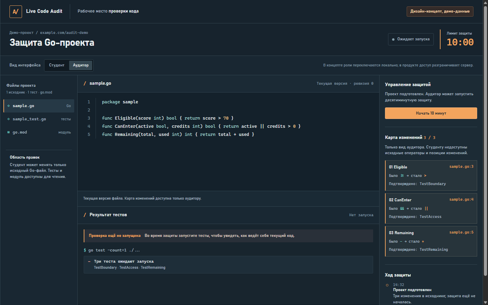

ВАРИАНТ A
Пульт защиты
Плотное рабочее место для тех, кто живёт в коде. Тёмная поверхность, контрольные сигналы, тесты и история в одном экране.
- Код и журнал всегда рядом
- Удобно для опытного аудитора
- Спокойный технический характер
Открыть AТёмный / инструментальный